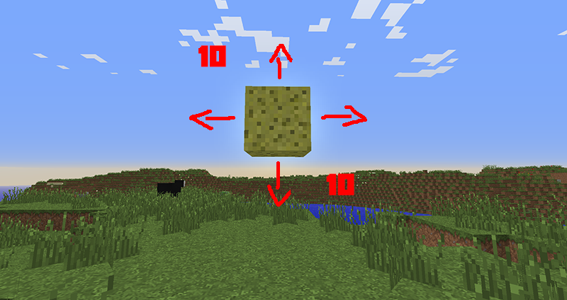

Survival: Land Protection
City not for you? That's fine! Outside of the city walls there is plenty of unclaimed land for you to build on. To protect this land, warp to the land protection building (/warp protection). Here, you can purchase a sponge, which on placement protects 10 blocks on each side (this includes upwards and downwards)
/ps add [user] - Add members to your protected area.
